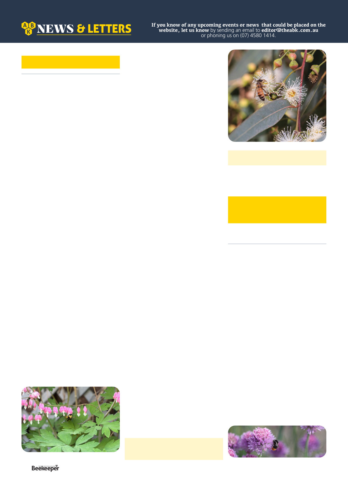

If you know of any upcoming events or news that could be placed on the
website, let us know by sending an email to editor@theabk.com.au
or phoning us on (07) 4580 1414.
NEWS & LETTERS
News
Virus transmission between
bee species does not lead to
new variants
A new study led by researchers at the
University of Minnesota found transmis-
sion of viruses between different bee spe-
cies did not lead to the formation of new
virus variants.
Results of the study, published in
Communications Biology, may be a rare
bit of good news for bee pollinators,
which have been in decline for over 25
years, according to the U.S. Fish and
Wildlife Service.
The study focused on three viruses:
deformed wing virus, black queen cell
virus and sacbrood virus. These are
three known pathogens of the non-native
Western honey bee, the most commonly
kept by beekeepers and the most wide-
spread bee species in the world.
The researchers performed genomic
sequencing on samples over three years
to track the Western honey bee viral land-
scapes and whether the viruses could
infect and adapt to common native bum-
blebees.
They found:
While the honeybee viruses were pres-
ent in the bumblebees, they were over
98% genetically identical and did not
accumulate mutations that were specific
to bumblebees.
No bumblebee-specific variants of
honeybee viruses could be detected,
signaling that the viruses had not estab-
lished themselves within the bumblebee
populations. This suggests that the bum-
blebee was a dead-end host and bumble-
bee to bumblebee transmission was not
taking place.
The bumblebee had their own distinc-
tive virome suggesting that these viruses
were of more concern than those origi-
nating from honeybees.
Bee pollinator populations that are
crucial to ecosystems and food produc-
tion globally are under strain because of
habitat loss, pesticides, climate change,
invasive species, and pathogen-related
diseases. One potential disease threat
comes from the phenomenon for viral
spillover to native pollinator species.
“While a concern, viral spillover from
managed honey bees to wild bumble
bees has of yet not resulted in the pan-
demic-type effects as first proposed,” said
lead PI and corresponding author Declan
Schroeder, a professor in the College
of Veterinary Medicine. “Viral spillover
does not appear to be a reason to limit or
restrict the placement of honey bee col-
onies in areas occupied by wild bumble
bees or bees of other species.”
Protection of bumble bees of conser-
vation concern from potential pathogen
spillover from honey bees is still a valid
conservation action, particularly when
protecting species at risk of extinction.
Low genetic diversity, which has been
demonstrated in bumble bee species
of conservation concern, could increase
vulnerability to pathogen spillover.
“We will continue to monitor the true
viral diversity found both in managed
honey bees and wild bee pollinators.
Having a clear understanding of the bee
viral baseline will allow us to act if new
or reintroductions occur,” said Schroeder.
“While it is reassuring to see a lack of
virus replication in this study system,
there are still several reasons to minimize
exposure of native bee populations to
managed honey bees. While this study
found that there were no new virus var-
iants formed in bumble bee hosts, that
does not mean that the spillover of
honey bee viruses to other bees is with-
out risk. I hope that this study can lead
to more monitoring to understand the
impacts of the viruses on the health of
bumble bees and other wild bees,” said
co-author Elaine Evans, an Extension pro-
fessor and researcher in the College of
Food, Agricultural and Natural Resource
Sciences.
While this study was conducted in
the United States, one concern here
in Australia is that viruses vectored
by varroa amongst honey bees could
impact native bees
https://twin-cities.umn.edu/news-events/virus-
transmission-between-bee-species-does-not-
News & Industry Updates
- AHBIC
Excerpt provided to ABK with permission from
AHBIC
CEO Report August 2025
July/August has been incredibly busy
for most beekeepers with the largest live-
stock movement in Australia occurring.
Nearly 300,000 hives have been moved
into almond orchards this season. At the
same time, crops like blueberries also
require bees for pollination, applying
further pressure on supply.
Leading into almonds we had reports
of highly variable colony strength across
SA, Vic and NSW and decreased numbers
of hives available as beekeepers leave
weaker colonies at home. This created
some panicked calls from beekeepers
and growers leading into almond bloom.
We have been doing our best to solve
problems and connect growers/bee-
keepers where possible.
The interstate border restrictions and
challenges around navigating the dif-
ferent permit systems has also created
Credit: University of Minnesota
4 |
| Vol. 127 | No. 4